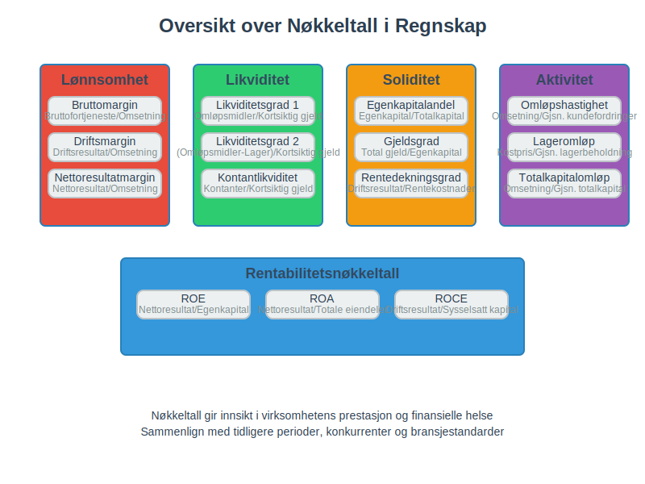
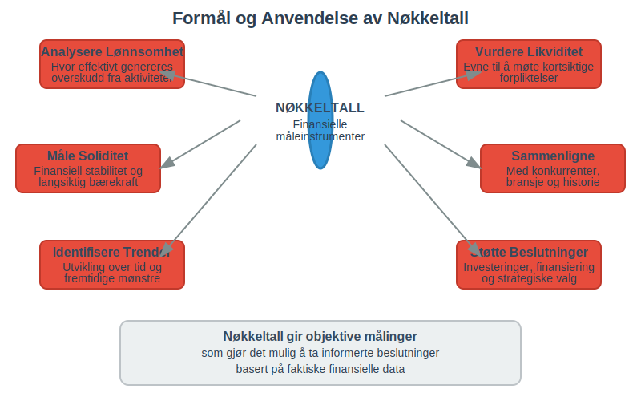
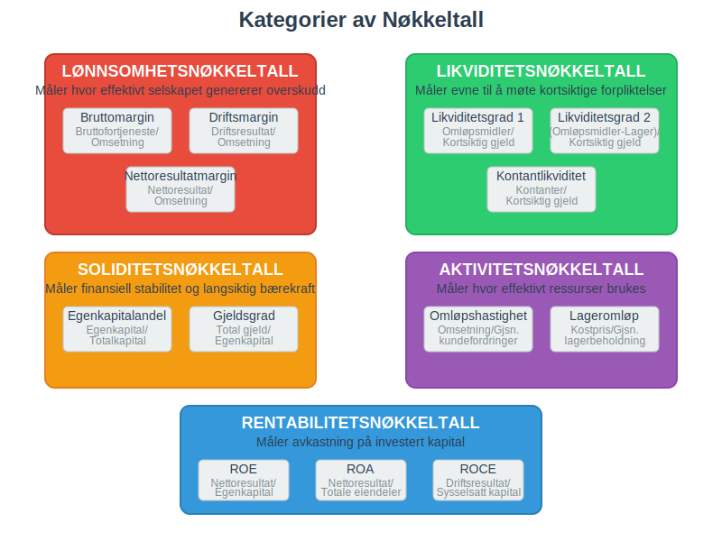
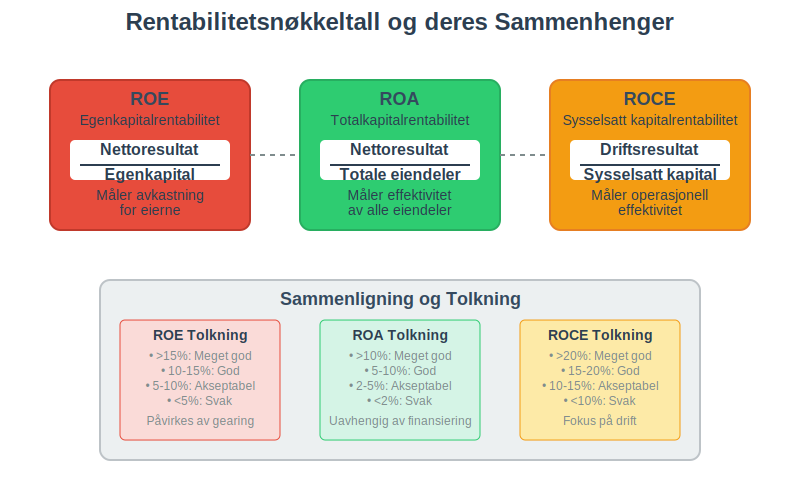
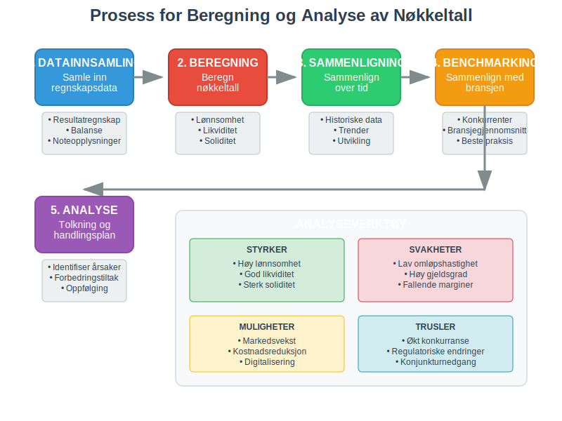
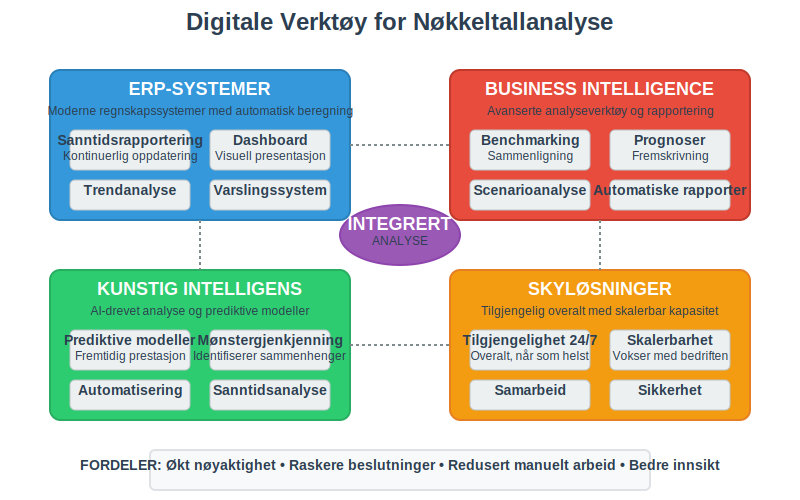
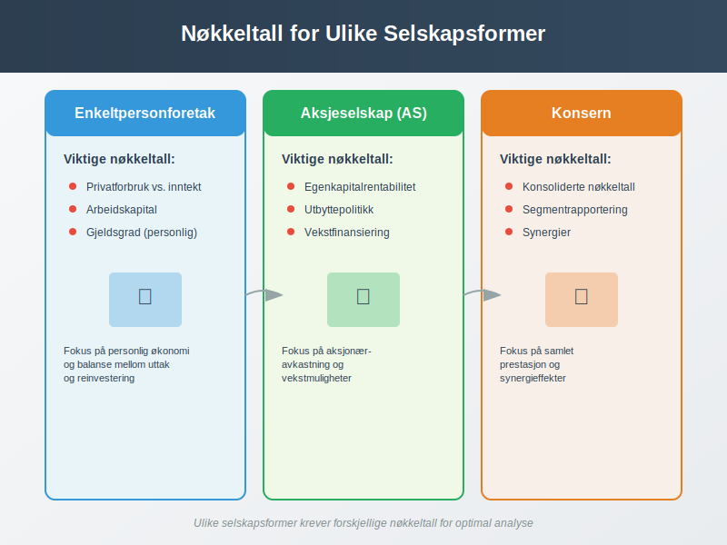
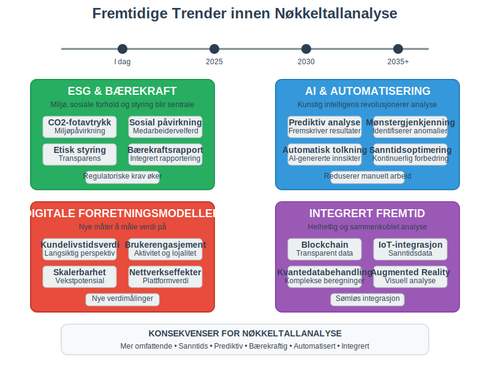

Nøkkeltall er finansielle måleinstrumenter som brukes til å analysere og vurdere en virksomhets økonomiske prestasjon, finansielle stilling og operasjonelle effektivitet. Disse tallene gir verdifull innsikt i hvordan selskapet presterer sammenlignet med tidligere perioder, konkurrenter og bransjestandarder.

Hva er Nøkkeltall?
Nøkkeltall, også kalt finansielle nøkkeltall eller forholdstall, er matematiske beregninger som uttrykker forholdet mellom ulike poster i regnskapet. De gir en standardisert måte å måle og sammenligne virksomheters prestasjon på.
Formål med Nøkkeltall
Nøkkeltall brukes til å:
- Analysere lønnsomhet og hvor effektivt selskapet genererer overskudd
- Vurdere likviditet og selskapets evne til å møte kortsiktige forpliktelser
- Måle soliditet og den finansielle stabiliteten
- Sammenligne prestasjon med konkurrenter og bransjen
- Identifisere trender over tid
- Støtte beslutninger om investeringer og finansiering

Hovedkategorier av Nøkkeltall
Lønnsomhetsnøkkeltall
Disse nøkkeltallene måler hvor effektivt selskapet genererer overskudd fra sine aktiviteter.
Bruttomargin
Bruttomargin viser hvor mye som blir igjen etter at kostprisen er trukket fra omsetningen:
Bruttomargin (%) = (Bruttofortjeneste / Omsetning) × 100
- Høy bruttomargin indikerer god prissetting og kostnadskontrroll
- Lav bruttomargin kan tyde på prispress eller høye produksjonskostnader
Driftsmargin
Driftsmargin viser lønnsomheten fra kjernevirksomheten:
Driftsmargin (%) = (Driftsresultat / Omsetning) × 100
Nettoresultatmargin
Nettoresultatmargin viser den totale lønnsomheten etter alle kostnader:
Nettoresultatmargin (%) = (Nettoresultat / Omsetning) × 100
Likviditetsnøkkeltall
Disse måler selskapets evne til å møte kortsiktige forpliktelser.
Likviditetsgrad 1 (Løpende likviditet)
Likviditetsgrad 1 viser forholdet mellom omløpsmidler og kortsiktig gjeld:
Likviditetsgrad 1 = Omløpsmidler / Kortsiktig gjeld
- Over 2,0: Meget god likviditet
- 1,5-2,0: God likviditet
- 1,0-1,5: Akseptabel likviditet
- Under 1,0: Svak likviditet
Likviditetsgrad 2 (Rask likviditet)
Likviditetsgrad 2 ekskluderer lagerbeholdning som kan være vanskelig å realisere raskt:
Likviditetsgrad 2 = (Omløpsmidler - Lagerbeholdning) / Kortsiktig gjeld
Soliditetsnøkkeltall
Disse måler selskapets finansielle stabilitet og evne til å møte langsiktige forpliktelser.
Egenkapitalandel
Egenkapitalandelen viser hvor stor andel av totalkapitalen som er egenkapital:
Egenkapitalandel (%) = (Egenkapital / Totalkapital) × 100
- Over 40%: Meget god soliditet
- 30-40%: God soliditet
- 20-30%: Akseptabel soliditet
- Under 20%: Svak soliditet
Gjeldsgrad
Gjeldsgraden viser forholdet mellom total gjeld og egenkapital:
Gjeldsgrad = Total gjeld / Egenkapital
Aktivitetsnøkkeltall
Disse måler hvor effektivt selskapet bruker sine ressurser.
Omløpshastighet for kundefordringer
Viser hvor raskt selskapet innkrever sine kundefordringer:
Omløpshastighet kundefordringer = Omsetning / Gjennomsnittlige kundefordringer
Lageromløpshastighet
Viser hvor raskt lageret omsettes:
Lageromløpshastighet = Kostpris solgte varer / Gjennomsnittlig lagerbeholdning

Sammenligning av Nøkkeltall
| Nøkkeltall | Formål | God verdi | Dårlig verdi |
|---|---|---|---|
| Bruttomargin | Lønnsomhet | >30% | <15% |
| Driftsmargin | Operasjonell effektivitet | >10% | <5% |
| Likviditetsgrad 1 | Kortsiktig betalingsevne | >1,5 | <1,0 |
| Egenkapitalandel | Finansiell stabilitet | >30% | <20% |
| Gjeldsgrad | Gjeldsbelastning | <2,0 | >4,0 |
| Omsetning per ansatt | Produktivitet | Høy | Lav |
Rentabilitetsnøkkeltall
Egenkapitalrentabilitet (ROE)
Egenkapitalrentabiliteten måler avkastningen på egenkapitalen:
ROE (%) = (Nettoresultat / Gjennomsnittlig egenkapital) × 100
Dette nøkkeltallet viser hvor mye avkastning eierne får på sin investerte kapital.
Totalkapitalrentabilitet (ROA)
Totalkapitalrentabiliteten måler hvor effektivt selskapet bruker alle sine eiendeler:
ROA (%) = (Nettoresultat / Gjennomsnittlige totale eiendeler) × 100
Sysselsatt kapitalrentabilitet (ROCE)
ROCE måler avkastningen på den kapitalen som faktisk er i bruk:
ROCE (%) = (Driftsresultat / Sysselsatt kapital) × 100

Bransjespesifikke Nøkkeltall
Detaljhandel
For detaljhandel er spesielt viktige nøkkeltall:
- Salg per kvadratmeter: Omsetning / Butikkareal
- Lageromløpshastighet: Hvor raskt varer selges
- Bruttomargin: Fortjeneste på solgte varer
Produksjonsbedrifter
For produksjonsbedrifter fokuseres det på:
- Kapasitetsutnyttelse: Faktisk produksjon / Maksimal kapasitet
- Produktivitet per ansatt: Produksjon / Antall ansatte
- Materialeffektivitet: Svinn og kassasjon
Tjenestebedrifter
For tjenestebedrifter er viktige nøkkeltall:
- Faktureringsgrad: Fakturerte timer / Totale timer
- Omsetning per ansatt: Produktivitet måling
- Kundetilfredshet: Kvalitetsmåling
Beregning og Analyse
Datakilder
Nøkkeltall beregnes primært fra:
- Resultatregnskap: For lønnsomhets- og aktivitetsnøkkeltall
- Balanse: For soliditets- og likviditetsnøkkeltall
- Noteopplysninger: For tilleggsinformasjon og detaljer
Tidsperioder
For å få et riktig bilde bør nøkkeltall analyseres over:
- Flere år: For å identifisere trender
- Kvartalsvis: For å følge utviklingen tett
- Sammenligning: Med konkurrenter og bransjen
Tolkning av Resultater
Ved tolkning av nøkkeltall må man vurdere:
- Bransjeforskjeller: Ulike bransjer har ulike normale verdier
- Sesongvariasjoner: Mange virksomheter har sesongmessige svingninger
- Konjunkturer: Økonomiske sykler påvirker prestasjon
- Selskapslivssyklus: Oppstarts-, vekst-, modenhets- og nedgangsfaser

Nøkkeltall for Ulike Interessenter
For Ledelsen
Ledelsen bruker nøkkeltall til:
- Strategisk planlegging og målsetting
- Operasjonell styring og forbedring
- Ressursallokering og prioritering
- Prestasjonsmåling av avdelinger og ansatte
For Investorer
Investorer fokuserer på:
- Lønnsomhet og vekstpotensial
- Risiko og finansiell stabilitet
- Dividendepolitikk og utbyttevekst
- Markedsverdi og aksjekurs
For Kreditorer
Leverandører og banker vurderer:
- Betalingsevne og likviditet
- Soliditet og gjeldskapasitet
- Stabilitet i inntjening
- Sikkerhet for utlån
For Myndigheter
Skattemyndigheter og tilsynsorganer ser på:
- Skatteevne og inntektsnivå
- Regelverksetterlevelse og rapportering
- Samfunnsansvar og bærekraft
Digitale Verktøy og Automatisering
Moderne Regnskapssystemer
Dagens ERP-systemer kan automatisk beregne nøkkeltall:
- Sanntidsrapportering: Kontinuerlig oppdatering av nøkkeltall
- Dashboard: Visuell presentasjon av viktige nøkkeltall
- Trendanalyse: Automatisk identifisering av utviklingstrekk
- Varsling: Automatiske advarsler ved avvik
Business Intelligence
BI-verktøy gir avanserte analysemuligheter:
- Sammenligning: Med konkurrenter og bransjen
- Prognoser: Fremskrivning basert på historiske data
- Scenarioanalyse: “Hva hvis”-beregninger
- Rapportgenerering: Automatiske rapporter til interessenter

Begrensninger og Fallgruver
Regnskapsmessige Begrensninger
Nøkkeltall basert på regnskapsdata har visse begrensninger:
- Historiske data: Reflekterer fortiden, ikke fremtiden
- Regnskapsprinsipper: Ulike prinsipper kan gi ulike resultater
- Estimater: Mange regnskapstall er basert på skjønn
- Inflasjon: Historiske kostnader reflekterer ikke dagens verdier
Tolkningsfeil
Vanlige feil ved bruk av nøkkeltall:
- Isolert vurdering: Ser på enkeltall uten sammenheng
- Manglende kontekst: Ignorerer bransje- og markedsforhold
- Kortsiktig fokus: Overser langsiktige trender
- Manipulasjon: Bevisst påvirkning av nøkkeltall
Kvalitative Faktorer
Nøkkeltall fanger ikke opp:
- Ledelseskvalitet og kompetanse
- Markedsposisjon og konkurransefortrinn
- Innovasjonsevne og fremtidspotensial
- Omdømme og merkevare
Nøkkeltall i Ulike Selskapsformer
Enkeltpersonforetak
For enkeltpersonforetak er viktige nøkkeltall:
- Privatforbruk vs. inntekt: Balanse mellom uttak og inntjening
- Arbeidskapital: Evne til å finansiere drift
- Gjeldsgrad: Personlig gjeldsbelastning
Aksjeselskap
For aksjeselskap fokuseres det på:
- Egenkapitalrentabilitet: Avkastning til aksjonærene
- Utbyttepolitikk: Balanse mellom utbytte og reinvestering
- Vekstfinansiering: Evne til å finansiere ekspansjon
Konsern
For konsern er det viktig å se på:
- Konsoliderte nøkkeltall: Samlet prestasjon
- Segmentrapportering: Prestasjon per forretningsområde
- Synergier: Gevinster fra samarbeid mellom selskaper

Internasjonale Standarder
IFRS og Nøkkeltall
Ved bruk av IFRS må man være oppmerksom på:
- Virkelig verdi: Påvirker balanseposter og nøkkeltall
- Valutaomregning: Kompliserer sammenligning over tid
- Segmentrapportering: Krav til detaljert rapportering
Sammenligning på Tvers av Land
Ved internasjonal sammenligning må man vurdere:
- Regnskapsstandarder: Ulike land har ulike regler
- Skatteforhold: Påvirker nettoresultat og egenkapital
- Valutaforskjeller: Må justeres for valutaendringer
- Kulturelle faktorer: Ulike forretningspraksiser
Fremtidige Utviklingstrekk
ESG og Bærekraft
ESG-nøkkeltall blir stadig viktigere:
- Miljøpåvirkning: CO2-utslipp, energiforbruk
- Sosiale forhold: Medarbeidertilfredshet, mangfold
- Styring: Etikk, transparens, risikostyring
Digitalisering og AI
Kunstig intelligens endrer nøkkeltallanalyse:
- Prediktive modeller: Fremskriver fremtidig prestasjon
- Mønstergjenkjenning: Identifiserer sammenhenger
- Automatisering: Reduserer manuelt arbeid
- Sanntidsanalyse: Kontinuerlig overvåking
Nye Forretningsmodeller
Digitale forretningsmodeller krever nye nøkkeltall:
- Kundelivstidsverdi: Langsiktig kundeverdi
- Brukerengasjement: Aktivitet og lojalitet
- Skalerbarhet: Evne til rask vekst
- Nettverkseffekter: Verdi av brukernettverket

Praktiske Tips for Bruk av Nøkkeltall
Etablering av Nøkkeltallsystem
For å etablere et effektivt nøkkeltallsystem:
- Identifiser kritiske suksessfaktorer for virksomheten
- Velg relevante nøkkeltall som måler disse faktorene
- Sett målverdier basert på strategi og benchmarking
- Implementer rapporteringsrutiner for regelmessig oppfølging
- Tren personalet i tolkning og bruk av nøkkeltall
Rapportering og Kommunikasjon
Effektiv rapportering av nøkkeltall:
- Visuell presentasjon: Bruk grafer og diagrammer
- Trendanalyse: Vis utvikling over tid
- Kommentarer: Forklar årsaker til endringer
- Handlingsplaner: Knytt nøkkeltall til konkrete tiltak
Kontinuerlig Forbedring
For å sikre relevans og nytteverdi:
- Regelmessig gjennomgang: Vurder relevansen av nøkkeltall
- Benchmarking: Sammenlign med beste praksis
- Tilbakemelding: Innhent input fra brukere
- Oppdatering: Tilpass til endrede forhold
Konklusjon
Nøkkeltall er uunnværlige verktøy for å forstå og styre en virksomhets økonomiske prestasjon. De gir objektive målinger som gjør det mulig å:
- Vurdere lønnsomhet og finansiell helse
- Sammenligne prestasjon over tid og mot konkurrenter
- Identifisere styrker og svakheter i virksomheten
- Ta informerte beslutninger om fremtidig strategi
For å få maksimal nytte av nøkkeltall er det viktig å:
- Velge relevante nøkkeltall for virksomheten og bransjen
- Forstå begrensningene og tolkningsfallgruver
- Kombinere kvantitative og kvalitative vurderinger
- Bruke nøkkeltall som grunnlag for handling, ikke bare rapportering
God internkontroll og pålitelig bokføring er grunnlaget for troverdige nøkkeltall. Investering i gode systemer og kompetanse innen nøkkeltallanalyse vil gi betydelig avkastning gjennom bedre beslutninger og forbedret prestasjon.
Etter hvert som forretningsverden blir mer kompleks og digital, vil evnen til å analysere og tolke nøkkeltall bli enda viktigere for å lykkes i konkurranseutsatte markeder.